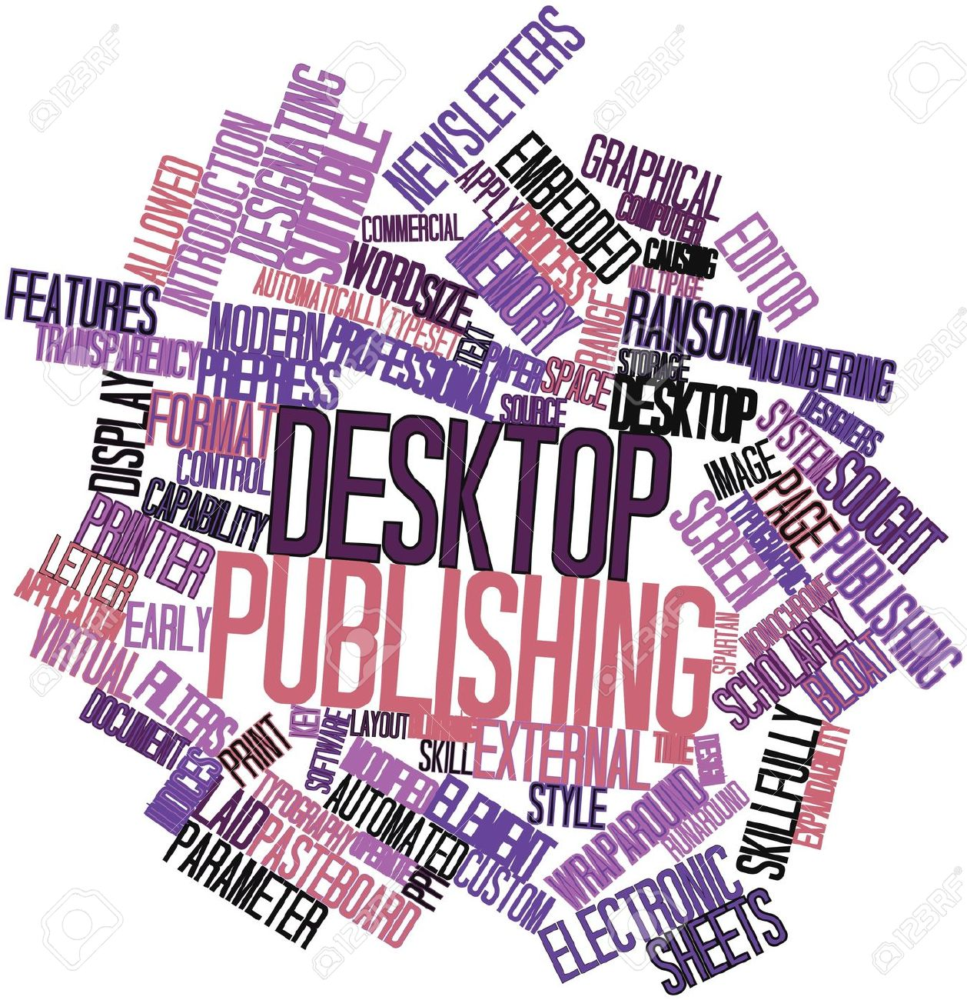
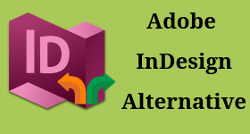
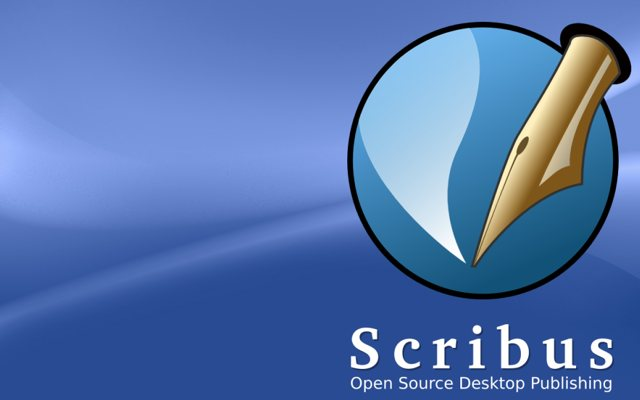
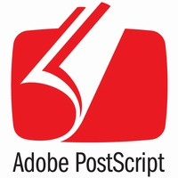

The Web
Categorie
Multimedia
Profiel Content Creator
tooling DTP
 Desktoppublishing of DTP is het via computer bewerken en opmaken van documenten voor drukwerk, en die dus meestal bestemd zijn voor publicatie, zoals boeken, tijdschriften, brochures en internetpublicaties.
Desktoppublishingsoftware, zoals QuarkXPress, Adobe InDesign of Scribus, is speciaal ontworpen hiervoor. In het algemeen vervangen deze programma's de tekstverwerkers en grafische programma's niet, maar worden ze gebruikt om de inhoud die met deze programma's gemaakt is te verzamelen en te verwerken: tekst, rasterafbeeldingen (zoals afbeeldingen die bewerkt zijn met Adobe Photoshop en vectorafbeeldingen zoals tekeningen/illustraties die gemaakt zijn met Adobe Illustrator, Inkscape of Affinity Designer. Wanneer het materiaal klaar is voor publicatie, kan dtp-software deze uitvoeren als Postscript of PDF, die vervolgens door commerciële drukkers kan gebruikt worden om drukplaten te maken dan wel rechtstreeks uitgeprint te worden.
→ zie: Wikipedia Desktop Publishing DTP
DTP gerelateerd
 Verwant aan DTP is E-book, Drukken, Typografie, Tekstverwerking, Grafisch ontwerper en Letterzetten
- Tooling voor DTP
-
Alternatieve niét FOSS tooling is Adobe InDesign is geschikt voor Windows en macOS (betaald), QuarkXpress geschikt voor Windows en macOS (betaald), Affinity Publisher geschikt voor Windows en macOS (betaald). Wél FOSS is:
- Scribus
-
 Scribus is ontworpen voor lay-out, typografie en voorbereiding van bestanden voor professionele apparatuur voor het instellen van afbeeldingen. Het kan ook geanimeerde en interactieve PD presentaties en PDF formulieren maken. Voorbeelden van toepassingen zijn het schrijven van kranten, brochures, nieuwsbrieven, posters en boeken. Scribus ondersteunt de meeste belangrijke bitmapindelingen, waaronder TIFF, JPEG en Adobe Photoshop. Vectortekeningen kunnen worden geïmporteerd of direct worden geopend voor bewerking. De lange lijst met ondersteunde indelingen omvat Encapsulated PostScript, SVG, Adobe Illustrator en Xfig. Professionele functies voor het instellen van afbeeldingen en afbeeldingen, waaronder CMYK-kleuren en ICC-kleurbeheer. Het heeft een ingebouwde scripting-engine die Python gebruikt (feitelijk 2.7.13 in 1.5.4). Het is beschikbaar in 60 talen.
→ zie: Wikipedia Scribus
→ zie: Website Scribus tbv downloadScribus kan de native bestandsindelingen van andere DTP-programma's zoals QuarkXPress of InDesign niet lezen of schrijven; de ontwikkelaars zijn van mening dat reverse-engineering van die bestandsindelingen onbetaalbaar complex zou zijn en juridische stappen van de makers van die programma's zou kunnen riskeren. Ondersteuning voor het importeren van Microsoft Publisher is opgenomen in versie 1.5, en QuarkXPress Tag-bestanden, IDML van InDesign en ICML-indelingen van InCopy zijn toegevoegd aan de ontwikkelingstak. Vanwege licentieproblemen biedt het softwarepakket geen ondersteuning voor het Pantone-kleurafstemmingssysteem (PMS), dat is opgenomen in sommige commerciële DTP-toepassingen. Pantone-kleuren kunnen zonder licentieproblemen in Scribus worden verkregen en verwerkt. Scribus wordt geleverd met meer dan 100 kleurenpaletten (meer dan 300 sinds 1.5.3), het meest gedoneerd door verschillende commerciële kleurleveranciers, maar ook met wetenschappelijke, nationale en overheidskleurenstandaarden
- Bijzonderheden
-
 Scribus heeft geen compabiliteit met Pantone PMS-kleuren
Scribus heeft geen read/write compatibiliteit met Adobe InDesign format
Dus vraag aan ketenpartners welke formats zij aankunnen cq accepteren - Bestand omzetten van Adobe InDesign naar Scribus
-
→ Open the file you wish to export in Adobe InDesign
→ Click the “File” option on the top navigation bar, then select “Save As.”
→ Click the arrow next to the “Save as Type” drop-down list, then choose either the “PostScript (*.ps)” or “Encapsulated PostScript (*.eps)” option from the list
→ Type a name for the newly exported file in the “File Name” input box, then click “Save.”
→ The document is converted to the PostScript or Encapsulated PostScript file type
→ Open the file in Scribus for editing